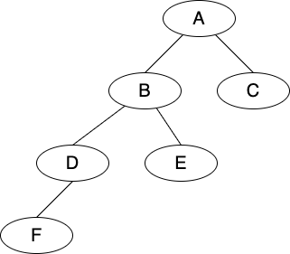

Lecture 6: Binary Trees - I
Contents
Lecture 6: Binary Trees - I¶
Review¶
Binary Tree¶
pointer-based data structure (like linked list) can achieve worst-case performance
binary tree is pointer-based data structure with three pointers per node
node \(<X>\): item, parent pointer, left pointer, right pointer

node |
\(<A>\) |
\(<B>\) |
\(<C>\) |
\(<D>\) |
\(<E>\) |
\(<F>\) |
|---|---|---|---|---|---|---|
item |
\(A\) |
\(B\) |
\(C\) |
\(D\) |
\(E\) |
\(F\) |
parent |
None |
\(<A>\) |
\(<A>\) |
\(<B>\) |
\(<B>\) |
\(<D>\) |
left |
\(<B>\) |
\(<D>\) |
\(None\) |
\(<F>\) |
None |
None |
right |
\(<C>\) |
\(<E>\) |
None |
None |
None |
None |
Terminology¶
the root has no parent
a leaf of a tree has no children
depth (\(<X>\)) of a node (\(<X>\)) in the tree rooted at \(<R>\) to be the length of path from (\(<X>\)) to \(<R>\). Depth starts from the root.
height (\(h\)) \(<X>\) of a node to be the max depth of any node in the subtree rooted at \(<X>\). Height starts from the leaf.
the height of leaf is 0 and the depth of a root is 0.
How to represent tree in set and sequence?
traverse order:
F-D-B-E-A-Cevery node in the node \(<X>\)’s left subtree is before \(<X>\)
every node in the node \(<X>\)’s right subtree is after \(<X>\)
algorithm
iterate \(<X>\) as subtree:
iterate \(<X>\).left
output \(<X>\)
iterate \(<X>\).right
traversal order has no meaning relative to the stored item.
later assign semantic meaning to traversal order to implement Set/Sequence interface
Static Operation¶
cannot cheaply maintain traversal order of tree. The following operations assumes the computer cannot get the traversal order cheapily.
subtree_first(\(<X>\)): find first node in the traversal order of node \(<X>\)’ subtreealgorithm -> \(O(h)\)
recursively return the first node in the left subtree
example
subtree_first(\(<A>\)) -> \(<F>\)
subtree_last(\(<X>\)): symmetric to subtree_first()successor(\(<X>\)): next after node \(<X>\) in the tree’s traversal orderalgorithm -> \(O(h)\)
if \(<X>\).right, return
subtree_first(\(<X>\))else: -> return lowest ancestor of \(<X>\) for which \(<X>\) is in the left subtree
walk up the tree (\(<X>\) = \(<X>\).parent)
until go up a left branch (\(<X>\) = \(<X>\).parent.left)
return \(<X>\)
example
successor(<B>) -> <E>successor(<E>) -> <A>successor(<A>) -> None
Dynamic Operation¶
the operations are on traversal order
subtree_insert_after(node.new) -> \(O(h)\)algorithm
if <X> has no right child, make <Y> the right child of <X>
otherwise, make the <Y> as the left child of <X>’s successor (which cannot have a left child)
examples
insert <G> after <D> in traveral order
insert \(<H>\) after \(<A>\) in traversal order
_____<A>_____
__<B>__ __<C>__
__<D>__ __<E>__
<F> <G>
_____<A>_____
__<B>__ __<C>__
__<D>__ __<E>__ <H>
<F>
subtree_insert_before(nod.new)algorithm
if <X> has no left child, make make <Y> the left child of <X>
otherwise, make the <Y> as the right child of <X>’s predecessor (which cannot have a right child)
examples
insert <G> before <E> in traversal order
insert <H> before <B> in traversal order
_____<A>_____
__<B>__ __<C>__
__<D>__ __<E>__
<F> <G>
_____<A>_____
__<B>__ __<C>__
__<D>__ __<E>__
<F> <H>
subtree_delete(<X>) -> \(O(h)\)algorithm
if <X> is a leaf, detach from parent and return
otherwise, <X> has a child
if <X> has a left child, swap items with the predecessor of <X> and recurse
otherwise <X> has a right child, swap items with the successor of <X> and recurse
examples:
delete(F)
delete(A)
Application: Set¶
traversal oder is sorted order increasing by keys
equivelant to Binary Search Tree (BST): for every node, every key in the left subtree \(\le\) node’s key \(\le\) every key in the right subtree
find(k) -> binary search
if \(k\) is smaller than key at <X>, recurse in the left subtree (or return None)
if \(k\) is greater than key at <X>, recurse in the right subtree (or return None)
otherwise return the item stored at <X>
Application: Sequence¶
traversal oder = sequence order